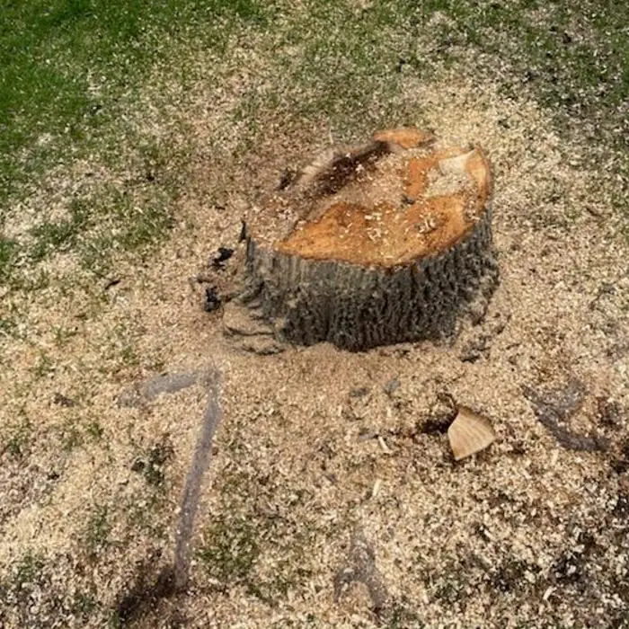
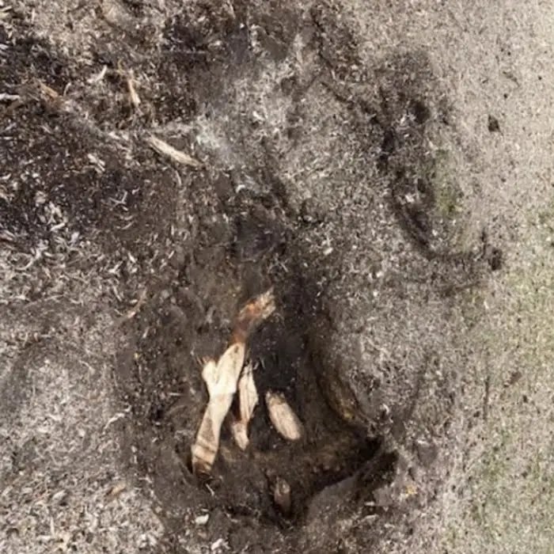

Tree Removal
Dead, leaning or unwanted trees taken down safely, with full cleanup.
That old stump is a tripping hazard, a mower-blade killer and a home for ants and fungus. We grind it below the surface so you can get your yard back.
A stump left in the yard doesn't just sit there. It takes years to rot, sends up suckers that turn into new shrubby growth, attracts carpenter ants and fungus, and makes mowing a chore. Stumps from trees that died of disease, like ash killed by emerald ash borer, are worth removing so the area can be replanted with something healthy.
Stump grinding is the fastest, cleanest way to deal with it. A grinder chews the stump and the top layer of roots into wood chips, leaving a hole you can fill with soil and seed or sod.


We grind fresh stumps right after a tree removal and old stumps left by a previous owner or another company. If you have several stumps, we can do them all in one visit, which usually brings the per-stump cost down. Ask about it when you call for a quote.
"Stump removal" sometimes means digging out the whole root ball with an excavator. That leaves a big hole and a lot of disturbed lawn, and it is rarely needed for a home yard. Grinding removes the part you can see and the part that would get in the way of planting, without tearing up your property. For almost every Blaine homeowner, grinding is the right choice.
The price depends mainly on the stump's diameter, how many stumps there are, and how hard they are to reach. Check our cost guide for the main factors, or call (651) 800-1205 for a free quote.
We typically grind several inches below grade, and deeper if you are planning to sod, plant or build over the spot.
Grinding removes the stump and root crown, which stops most regrowth. A few species can send up suckers from remaining roots for a season, and those are easy to mow or pull.
Usually, yes. We use grinders that fit through standard gate openings.
Your choice: we can rake them back into the hole, leave them for mulch, or haul them away.
Not necessarily. As long as we can access the stump and the gate is unlocked, we can do the work and leave the area cleaned up.
Call or text for a free, no-obligation quote. We serve homeowners all across Blaine, MN.